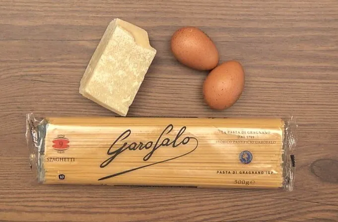
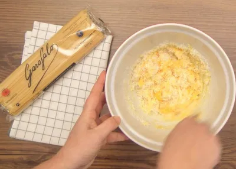

Hoy os enseñaré como preparar la auténtica pasta a la carbonara como en la misma Italia, con una salsa a base de huevo y queso que te hará dejar el plato limpio y repetir de nuevo. Este plato tradicional tan italiano como la pizza y la salsa boloñesa, tiene una bonita historia, ya sabéis que me gusta investigar sobre el origen de las recetas y este plato tiene muchas teorías al respecto (a lo mejor ninguna es cierta pero son muy interesantes).
La auténtica salsa carbonara no lleva nata ni crema. En la mayoría de los hogares españoles se prepara “la falsa carbonara”, una adaptación de la receta italiana original agregando nata. No digo que estén mal, al contrario, pero hablando con propiedad de este tema no es lo correcto. Vamos a utilizar la pasta apropiada para esta receta, una pasta larga de Garofalo, los Spaguetti à Figliata que están hechos con sémola de trigo duro con una superficie rugosa que ayuda a agarrar bien la salsa carbonara. Son perfectos para este tipo de receta italiana.
Receta de espaguetis con salsa carbonara
Preparación de la salsa carbonara
Cortamos la panceta de cerdo o papada salada (guanciale) en dados o tiras gruesas y los ponemos en la sartén. Sofreímos en un sartén durante 5 minutos sin añadir aceite, la panceta va a soltar grasa que vamos a emplear para la mantecatura después. Reservamos en la misma sartén.
Separamos las yemas de las claras de los 3 huevos que vamos a emplear (la clara no la tiréis, guardadla en la nevera, la podéis emplear en otras recetas) y añadimos uno entero. En un bol mezclamos todo y rallamos el queso Pecorino curado o un queso Parmesano o Parmigiano, lo añadimos al mismo bol con una pizca de sal.
A continuación empezaremos con la mantecatura o cómo mantecar la salsa. Mientras la preparamos, lo normal es que estemos cociendo la pasta, tal como os explico más adelante. Debemos reservar medio vaso aproximadamente del agua de cocer la pasta antes de escurrirla y utilizarla en la preparación de esta salsa carbonara.
Al hervir la pasta el agua se enturbia del almidón que sueltan los espaguetis y comienza a tener una textura más densa. Es un caldo magnífico para añadir cuando quieres ligar un poco más las salsas y conseguir una deliciosa untuosidad en un buen plato de espaguetis. Si cocemos pasta para más de 4 personas conseguiremos más cantidad de almidón en el agua y por tanto la salsa quedará más espesa. Para la mantecatura de los espaguetis, con medio vaso de agua de la cocción nos llega de sobra.
Mantecamos en la sartén rehogando la panceta, con un poco de aceite de oliva virgen extra y el agua de cocción. Añadimos los ingredientes de la sartén al bol con los huevos y removemos todo con una cuchara de madera.
Mezclamos todos los sabores bien y espolvoreamos con pimienta negra recién molida en cantidad. Una vez que tenemos la salsa nos ponemos con la pasta.


Preparación de los espaguetis
El primer paso es tener el sofrito de ingredientes ya preparado antes de que la pasta toque el agua. La salsa siempre debe esperar a los espaguetis y no al revés. Calentamos en una cazuela un litro de agua por cada 100 g de pasta, es la medida recomendada por persona, excepto si tenemos apasionados/as por los espaguetis en casa.
Estas proporciones, que normalmente vienen indicadas en los envases, ayudan a que la pasta no se pegue entre ella. Y siempre intenta utilizar una cazuela grande, la mayor de tu cocina.
Cuando empiece a hervir a borbotones echamos 1 puñado generoso de sal, unas 2 cucharadas rasas por cada 500 gramos de pasta. Seguidamente añadimos la pasta, siempre toda junta. Removemos con una cuchara de madera para que los espaguetis no se peguen y queden sueltos.
En el reverso del paquete de pasta viene el tiempo de cocción, debemos guiarnos por estas instrucciones porque para cada tipo es distinto, en este caso son 11 minutos. Así conseguiremos lo que se llama pasta «al dente» o en su punto justo. Es decir, que no se pase, aunque un gran consejo es probarla casi al final.